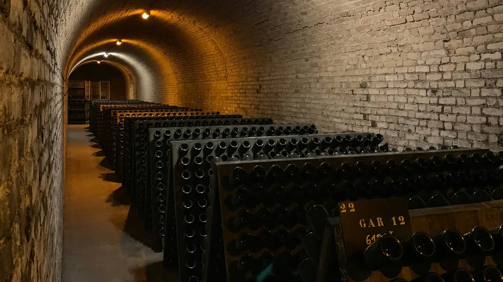

Home › Wine stories › Veuve Clicquot: the Widow Who Made Champagne Crystal Clear
Veuve Clicquot: the Widow Who Made Champagne Crystal Clear

Photo: Lomig on Unsplash
Widowed at 27, Barbe-Nicole Clicquot Ponsardin built a Champagne empire, traded through Napoleon's wars and helped invent the riddling rack that made the wine crystal clear.
Pour a glass of Champagne today and you expect it to be brilliantly clear. Two centuries ago that was far from guaranteed: the second fermentation that makes the bubbles also leaves a cloud of dead yeast in every bottle. The woman who did more than anyone to solve that problem was a young widow from Reims named Barbe-Nicole Ponsardin, better known to the world simply as 'the Widow Clicquot'.
Born in 1777, the daughter of a prosperous Reims textile manufacturer, she married François Clicquot in 1798. His father, Philippe, had set up a small wine business back in 1772, largely as a sideline to the family's cloth trade. Then, in October 1805, François died of a fever at just 30, leaving Barbe-Nicole, aged 27, with a young daughter and a modest, struggling wine house. Rather than sell up, she took charge herself, an almost unheard-of move for a woman of her time, and renamed the firm Veuve Clicquot-Ponsardin; 'veuve' simply means widow.
The early years were hard. The Napoleonic Wars choked trade across Europe, and her travelling salesman, Louis Bohne, criss-crossed Europe in search of customers. Her gamble came after Napoleon's defeat in 1814: in June that year a ship left Le Havre carrying more than 10,000 bottles bound for Russia, much of it from the excellent 1811 vintage, remembered as the year of the great comet. The wine sold out quickly and Russia became one of the house's most loyal markets. Her 1810 wine is also credited by the house as the first known vintage Champagne.
Her most lasting gift, though, was technical. Tradition has it that around 1816, with her cellar master Antoine de Müller, she had angled holes cut into a table so that bottles could rest neck-down. Turned a little by hand each day and gradually tipped upright, the bottles slowly let the sediment slide into the neck, where it could later be removed. This is remuage, or riddling, and the A-shaped wooden pupitre that grew from the idea still holds 120 bottles at roughly a 35-degree angle in cellars across Champagne.
Two years later, in 1818, she produced what is regarded as the first blended rosé Champagne, made by adding a little still red wine to white, a method Champagne still allows today. She ran the house for decades, later bringing in Édouard Werlé as her partner and successor, and died at the Château de Boursault on 29 July 1866, aged 88. The famous yellow label arrived a decade later, and the house's prestige cuvée, La Grande Dame, launched in 1972, is named in her honour.
Riddling by hand is slow: it takes weeks for every rack, and since the 1970s most bottles have been turned by computer-controlled gyropalettes instead. Yet the principle is exactly the one she championed, used for every traditional-method sparkling wine from Champagne to Cava to English fizz. To toast her properly, try a rosé Champagne made by blending, and as you admire its clarity, remember the widow who refused to let her wine stay cloudy.
Sources
- Veuve Clicquot – Wikipedia
- Veuve Clicquot – World History Encyclopedia
- Veuve Clicquot – LVMH
- Pointage, remuage (riddling) and dépointage – Union des Maisons de Champagne
The Wine Reference newsletter
New wines, stories and career guides, one email a week at most.
Over 18s only. Unsubscribe any time with one click. Your email is stored securely by Kit and never shared.
Support The Wine Reference
This guide is free, with no paywall. If it helped you choose a bottle, you can buy me a glass and keep it growing.
🍷 Buy me a glass